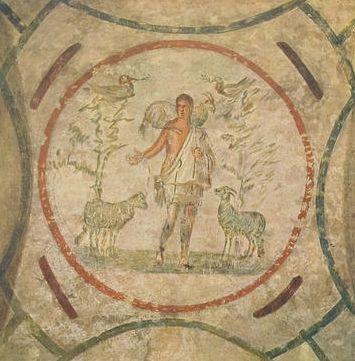

Catacombs of Priscilla

- Find Name
- Catacombs of Priscilla
- Description
- The 'queen of the catacombs' on the Via Salaria: some 13 kilometres of tufa galleries holding about 40,000 burials, including popes and martyrs of the Diocletian persecution. Rediscovered in the 16th century after centuries of oblivion and plundering, it still preserves the oldest known depiction of the Virgin Mary with the Child (late 2nd-early 3rd century, with Balaam pointing to a star), Good Shepherd frescoes, and the Greek Chapel's scenes of Moses, Isaac, Lazarus, and the Magi, with a Eucharistic banquet scene. The Priscilla after whom it is named was most probably a noblewoman of the senatorial Acilii family who donated the land — not certainly the Priscilla of Acts and Romans.
- Historical Period
- Roman
- Evidence Class
- Contextual
- Interpretations
- The art and its dates are secure, but two cautions apply: the Good Shepherd image also existed in pre-Christian Roman burial art, so individual images are read as Christian by context, not by the motif alone; and the namesake Priscilla is not identified with the New Testament Priscilla, so no profile link is made to her. The 'veiled woman' and banquet scenes are also debated in detail.
- Alternative Names
- Catacombe di Priscilla; Regina Catacumbarum
- Related Places
- Related Books
- Scripture Illuminated
- Biblical Significance
- The catacombs show what the resurrection hope looked like to Christians who buried their dead under persecution: a shepherd carrying the sheep, a mother and child beneath a star, Lazarus raised, bread broken at a banquet table. They are the earliest Christian art we have, made by people who had to bury in secret and who painted their faith on the walls of their graves.
- Artifact Date
- Late 2nd-5th century AD
- Current Location
- In situ, Rome
- Date Discovered
- 1578
- Discovery Location
- Via Salaria, Rome, Italy
- Timeline Era
- Early Church
Awaiting Review Not yet checked against scholarly sources. Treat its claims as provisional until this entry is reviewed. About verification
Last reviewed: not yet reviewed